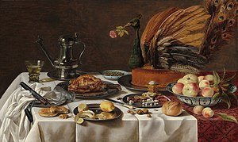
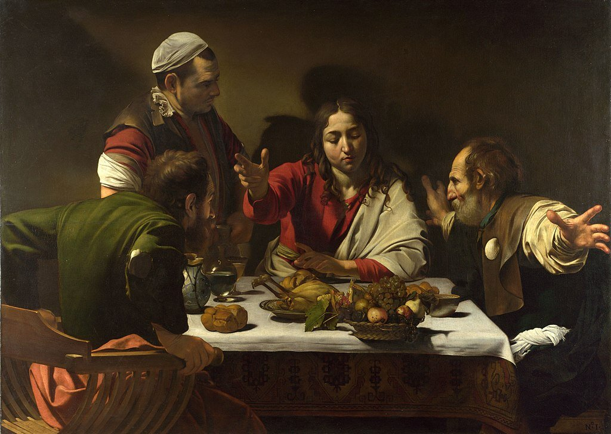
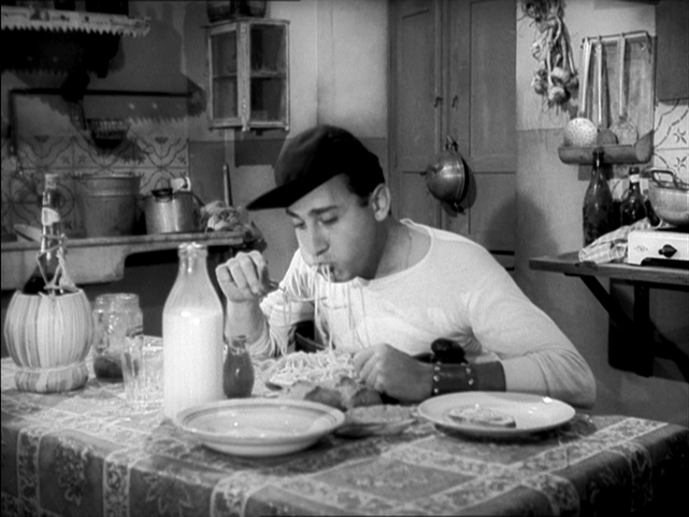

Welcome to Italian Cuisine
Experience the authentic taste of Italy with our traditional recipes and vibrant flavors.
Hi! we are Hannah and Savitri!
today we will be telling you more about the italian cuisine. But first we will be telling, why we choose to speak more abroud about the italian cuisine. Well we all know that one of the most popular cuisine in the whole entire world is the Italian cuisine. It has some of the most popular foods in the whole entire world like Pizza, Risotto, Tiramisu, Gelato, Pasta and Prosciutto
in Aruba the numbers of italian restaurants can vary. some of the most popular restaurants are Hostaria Da’ Vittorio, Gianni's Ristorante Italiano, Casa Tua Pizzeria, and Azzurro Ristorante Italiano. These restaurants serve authentic italian dishes for you to enjoy.
The history of italian cuisine
it all started in the Ancient times when influenced by the Etruscans and Romans, they were the ones who incorparted the greek culinary by practicing bread making and wine production
During the middle ages the Arab invasions had introduced new ingredients like spices,sugar and citrus fruits.
In the renaissance the italian cuisine became more refined, with elaborate feasts and the first cookbooks
Later, in the 18th and 19th centuries. Regional cuisines developed and spread after Italy's union
In the 20th century Italian immigrants popularized the cuisine worldwide, and post-WWII modernization globalized it further.
Additionally Italian cuisine was shaped by diverse influences and strong regional differences, with the north known for risottos and polenta, and the south for pasta and pizza
fun fact the oldest dish italian dish recorded was the Testaroli. It is a native dish of the southern Liguria and northern Tuscany regions of Italy. Testaroli is prepared from a batter that is cooked on a hot flat surface, after which it may be consumed
Our favorite recipes
Indulge in our selection of classic Italian desserts.